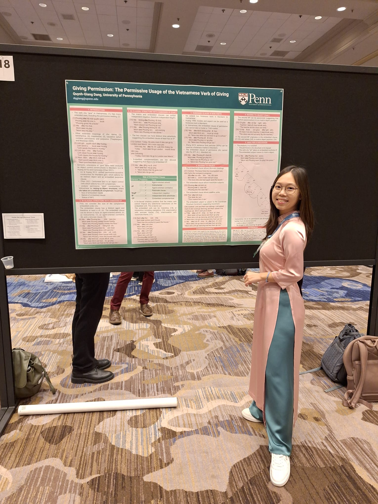
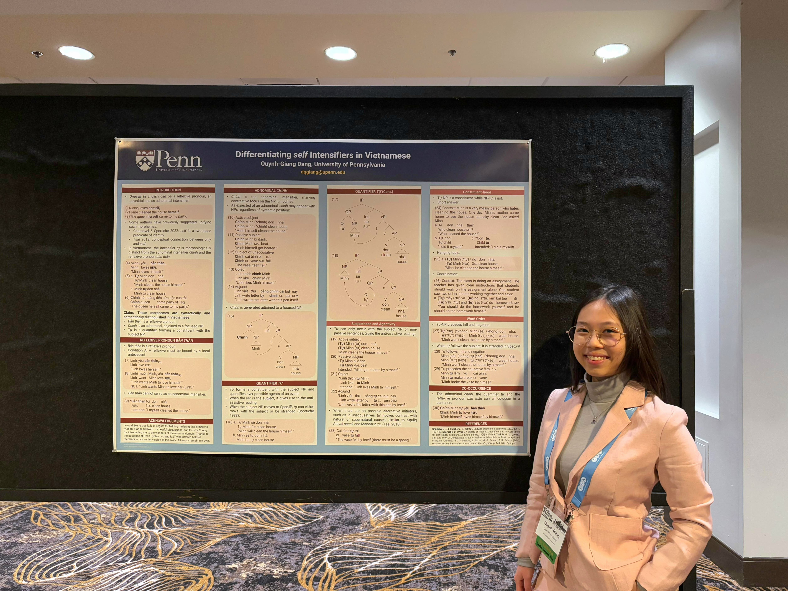
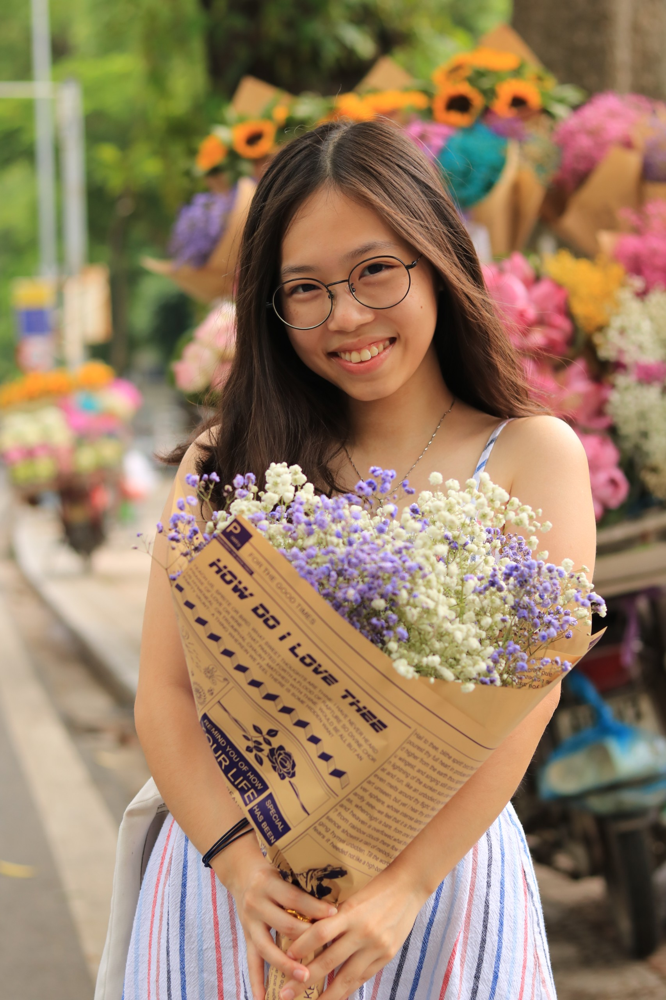
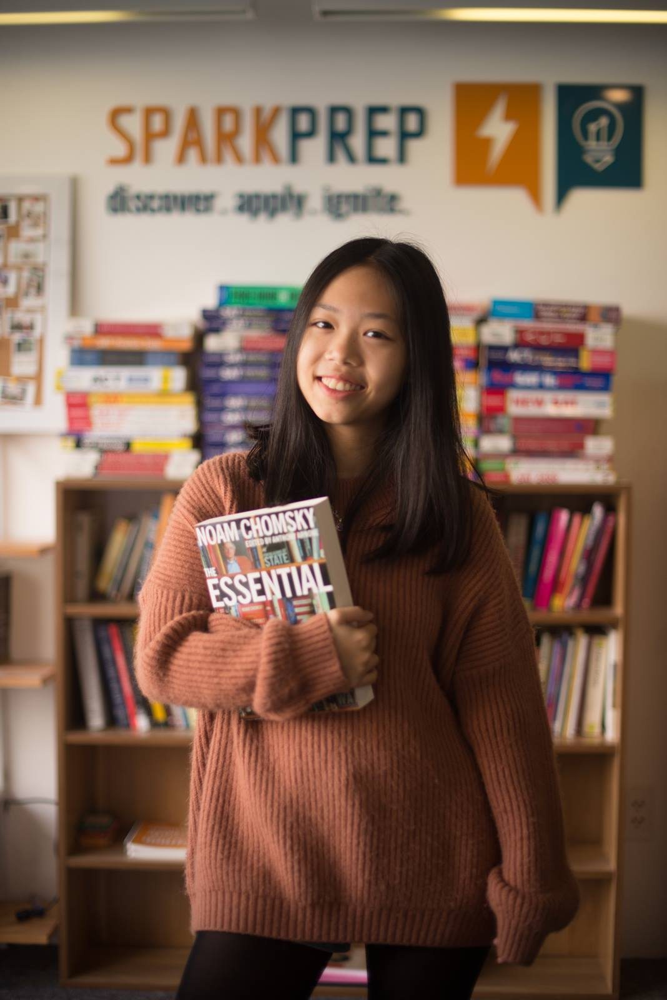

About
I am a Linguistics PhD Student at the University of Pennsylvania where I am advised by Julie Legate and Marlyse Baptista. I am broadly interested in the syntax of understudied languages, educational linguistics, and postcolonial studies. My recent research in linguistics involves Vietnamese syntax in the context of East/Southeast Asia and a critical examination of language education policies in Vietnam. I am also pursuing a Graduate Certificate in French and Francophone Studies, focusing on Vietnamese diaspora literature through a postcolonial lens.
I earned my BA in Linguistics and French Studies at Emory University, graduating summa cum laude and Phi Beta Kappa. My undergraduate thesis in Linguistics, which received Highest Honors, explores how educators at a primary school in Sapa, Vietnam are playing different roles to advocate for Mông minority language programs with different stakeholders.
Contact:
- Email: dqgiang@sas.upenn.edu
- UPenn profile: ling.upenn.edu/people/quynh-giang-dang
- LinkedIn: linkedin.com/in/dangquynhgiang
Publications
- Linguistic Dominance in Vietnamese Language Education: The case of Mông as L2 in primary schools. International Christian University Working Paper in Linguistics, Vol 24, 2023.
- Does Vietnamese Have Lexical Articles? A Reexamination of một, các and những. Emory Journal of Asian Studies, 2022.
- Theories of Argument Ellipsis: The View from Vietnamese. International Christian University Working Paper in Linguistics, Vol 18, 2022.
- Tone Correlation between Chinese Words and Sino-Vietnamese Words. Emory Journal of Asian Studies, 2022.
As Teaching Assistant
- LING 0001 — Introduction to Linguistics, University of Pennsylvania, Spring 2026 (Instructor: Paloma Jeretic)
- IDS 290R: Emergency Poetry, Emory University, Spring 2024 (Instructors: Peter Wakefield and James O’Shea)
- LING 201: Foundations of Linguistics, Emory University, Fall 2023 (Instructor: Erica Britt)
- IDS 290R: Taylor Swift vs. The Patriarchy, Emory University, Fall 2023 (Instructors: Kim Loudermilk and Rose Deighton-Mohammed)
- IDS 290R: Emergency Poetry, Emory University, Spring 2023 (Instructors: Peter Wakefield and James O’Shea)
- IDS 290R: Communicating Social Justice: Commitment or Woke Washing, Emory University, Fall 2021 (Instructors: Christine Ristaino and Nikki Graves)
Guest Lecture
- LING 0001 — Introduction to Linguistics, University of Pennsylvania, Spring 2026 (Instructor: Paloma Jeretic). Syntax.
- MLLC 150G: Self and Other, University of Massachusetts-Boston, Fall 2023 (Instructor: Alicia Doyen-Rodriguez). Vietnamese Tones in Kim Thúy's Ru.
Talks & Presentations
- “The Permissive Usage Of The Verb Of Giving In Vietnamese.” 35th Annual Meeting of the Southeast Asian Linguistics Society, Singapore (Poster)
- “Northern Vietnamese Negative Particle Questions: A Head-Movement Analysis.” 48th Generative Linguistics in the Old World Conference, Florence & Siena, Italy. 44th West Coast Conference on Formal Linguistics, Mexico City, Mexico (poster)
- “Growing Up During the English Boom in Vietnam: A Reflection on English Hegemony and Neoliberalism.” Sociolinguistics Symposium 2026, East London, South Africa
- “Internal vs. External Relations: Role Division Among Educators of Mông Students.” Sociolinguistics Symposium 2026, East London, South Africa
- “L’éducation et la double contrainte du métissage chez Kim Lefèvre.” 43rd 20th and 21st Century French & Francophone Studies International Colloquium, Notre Dame, Indiana
- “Giving Permission: The Permissive Usage of the Vietnamese Verb of Giving.” Linguistics Society of America Annual Meeting 2026, New Orleans, Louisiana (Poster)
- “The Decline in Taylor Swift’s Smut: Smut as Art for Female Desires.” Current Keywords in Digital Literary Culture: “Smut” and “Lore” , Virtual
- “Irrévérence décoloniale : Réappropriation des Antilles à travers « Jack Sparrow ».” 42nd 20th and 21st Century French & Francophone Studies International Colloquium, Greensboro, North Carolina
- “Differentiating self Intensifiers in Vietnamese.” Linguistics Society of America Annual Meeting 2025, Philadelphia, Pennsylvania (Poster)
- (With Ananya Mohan) “Combatting Standard Language Ideology in the Writing Center.” Southeastern Writing Center Association 2024 Conference, Atlanta, Georgia (Roundtable)
- “Working in a Language-as-Problem Framework: Flexibility in Minority Language Education.” Linguistics Society of America Annual Meeting 2024, New York, USA (Poster)
- (With Hsu-Te Cheng) “On Tự in Vietnamese: A Quantifier Floating Analysis.” 11th International Conference on Austroasiatic Linguistics, Virtual
- (With James O’Shea and Peter Wakefield) “Emergency Poetry: Words that Save.” Inaugural HumanisEM Conference, Virtual
- “Linguistic Dominance in Vietnamese Language Education: The Case of Mông as L2 in Primary Schools.” 7th Asian Junior Linguists Conference, Tokyo, Japan
- “Standards of “Good” Writing: Navigating Three Different Writing Cultures.” Southeastern Writing Center Association 2022 Conference, Virtual
- “Theories of Argument Ellipsis: The View from Vietnamese.” 6th Asian Junior Linguists Conference, Virtual
Conferences & Institutes



Just Me!

